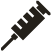

O que é precioso para ser um
DOADOR DE SANGUE?
- Ter entre 18 e 69 anos; serão aceitos candidatos à doação de
sangue com idade de 16 (dezesseis) e 17 (dezessete) anos, com o
consentimento formal e presencial do responsável legal, para cada
doação.
- Maiores de 60 anos não podem realizar a doação pela
primeira vez
- Pesar, no mínimo, 50 Kg
- Não estar em jejum, apenas evitar alimentos gordurosos e, após
o almoço, aguardar 3 horas
- Estar descansado
- Você também não pode fumar até 2 horas antes e 2 horas depois
da doação
Para doação é obrigatória a apresentação
de documento de identificação com
fotografia, emitido por órgão oficial,
preferencialmente o RG Ou CNH, e a informação
do endereço completo, inclusive o CEP
Sinta-se bem
por fazer o bem
Ao realizar uma doação de sangue, você está ajudando a
pelo menos três pacientes que necessitam de transfusão
A doação, respeitando os critérios técnicos, não acarreta
qualquer risco para o doador
O sangue coletado pelo Hemocentro Unicamp é processado
dentro de rigorosos critérios técnicos, separado em componentes
e examinado em modernos laboratórios
Esse sangue é distribuído gratuitamente aos hospitais públicos
e filantrópicos de nossa região, proporcionando segurança e
tranquilidade à população
Por isso tudo, aproveite a oportunidade para fazer parte desse
grupo de pessoas solidárias que pensam na doação de sangue
como garantia de vida!
|
Pense naquele que vai receber seu sangue.
Não pode doar sangue a pessoa que:
- Estiver com gripe, resfriado ou infecção acompanhado
de febre
- For portadora de sífilis (cancro), malária (maleita) ou
doença de Chagas
- For alcoolista crônico, ou tenha ingerido bebida
alcóolica nas últimas 12 horas (Prazos inferiores e
consumo de pequenas quantidades, devem ser
avaliados pelo profissional da triagem)
- Sido exposto a situações de risco para doenças
sexualmente transmissiveis
- História atual ou pregressa de uso de drogas
injetáveis ilicitas
- Tenha contraído Hepatite após os 11 anos de idade
- Tenha realizado endoscopia há menos de 6 meses
- Estiver grávida, em período de até 3 meses pós-parto
ou se estiver amamentando
Intervalo para doações:
- Homens: 60 dias (máximo 4 vezes nos últimos 12 meses)
- Mulheres: 90 dias (máximo 3 vezes nos últimos 12 meses)
- Idade entre 60 e 69 anos: 180 dias (máximo 2 vezes nos últimos 12 meses)
Procure orientação se você:
Estiver tomando medicamentos, tiver tomado
vacina recentemente e/ou estiver em tratamento médico.
|